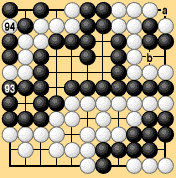
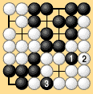
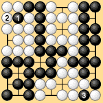
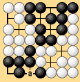
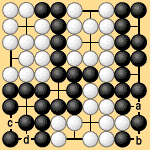

|
|
Next let's consider what happens if recreating a former position is allowed after consecutive passes. This is the most important case, because rules theorists have proposed solving the problem of connecting a final ko by ending the game with three passes. The next example shows that even this rule does not solve the problem. In Dia. 3-6 there is a bent four in the bottom right corner, which of course we do not consider to be unconditionally dead. If Black connects the thousand-year ko in the top right and an exchange takes place, or if Black takes but does not connect the ko at 'a' and White tries to capture the bent four in the corner, White loses by one point. |
|  |
| Dia. 3-6 95 captures 94, 96 passes, 97 at 'a,' 98 passes, 99 passes |
|---|
|
After Black 97 takes the thousand-year ko at 'a' Black does not connect this ko, because the game would then end in a draw. After White and Black pass, if White retakes the ko and Black and White both pass, Black can then recreate the same position two lines below White 94, and White will be unable to recreate the same position by recapturing, so White will die an unnatural death. Therefore, White does not recapture the thousand-year ko.* If Black accordingly declares that he is not going to connect, then the ko at 'a' is left hanging and we have the problem of whether the point below 'a' is Black's territory or not. We are forced to conclude that the rule to end the game with three passes, in order to solve the problem of connecting a final ko by allowing exceptions to the super-ko rule after two passes, does not solve the problem of connecting the final ko in Dia. 3-6. Under area rules Black gains a point by connecting the ko, so Black will connect the ko and the problem will be solved quite simply. This is an important position. The thousand-year ko, the bent four in the corner, and the position in the top left in Dia. 3-6 are not particularly unusual. It is not like the positions in Dias. 3-3-1 and 3-3-3 in which all groups have just two eyes, a situation which will virtually never arise in actual play. |
|  |  |
| Dia. 3-3-1 | Dia. 3-3-3 |
|---|
|
Various other exceptions to the super-ko rule might be considered. For example, after two consecutive passes, you could allow former positions to be recreated just twice. But there are any number of examples in which this yields a strange result with a repeating cycle halted in an odd state. Making exceptions to the rule only serves to create unnatural cases. There is no telling what sort of anomalies may turn up. In short, the super-ko rule is one of the fundamental rules of go, and making exceptions to it can lead to troubles that are hard to foresee. If you feel that results such as Dias. 3-3-2 and 3-3-4 run counter to tradition and you make exceptions to the super-ko rule to accommodate them, you had better be ready to prove by logic that your exceptions do not cause trouble. It will not be enough to say that no cases have been found in which the exception leads to peculiar results. That argument will always leave doubts about the rules. |
|  |  |
| Dia. 3-3-2 | Dia. 3-3-4 |
|---|
|
My opinion is that go has three fundamental rules which should be common to all rulesets and to which no exceptions should be allowed. These are:
|